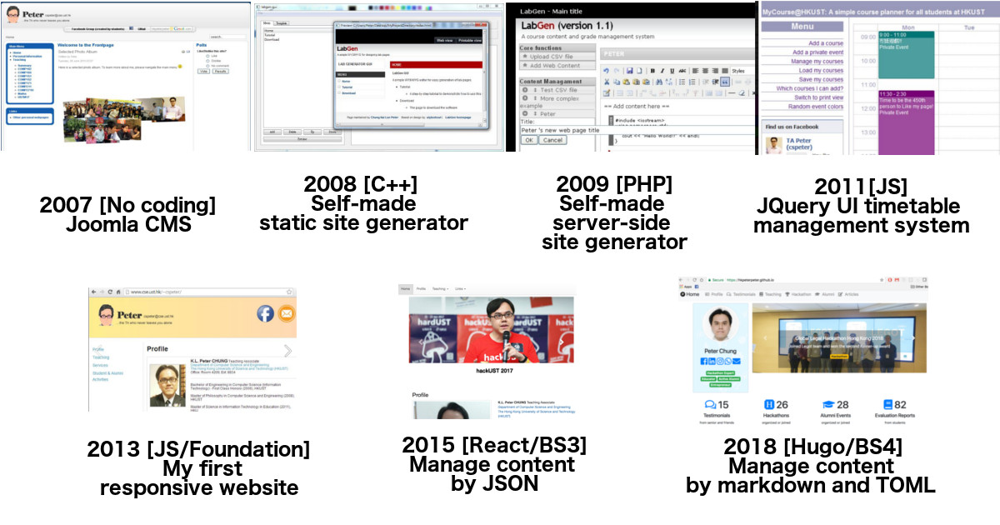
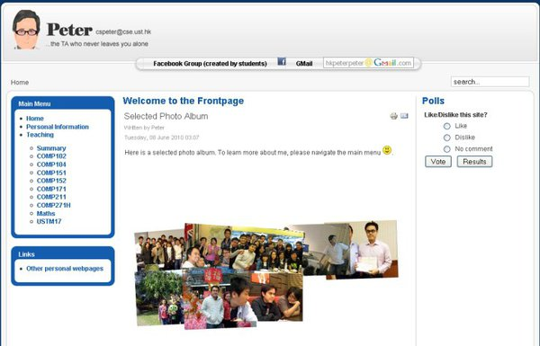
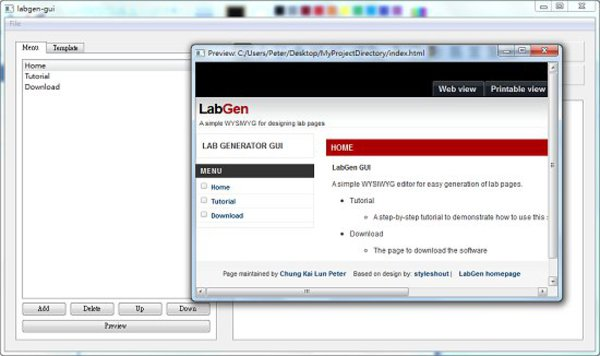
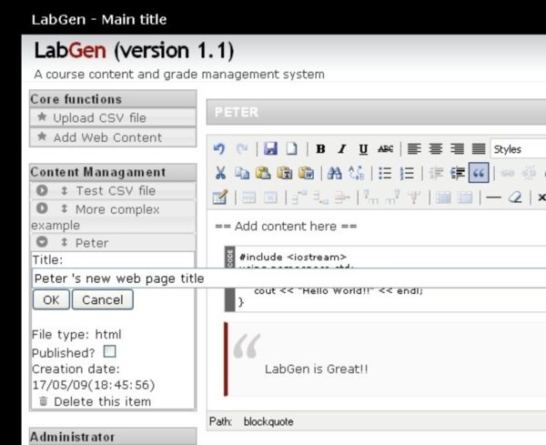
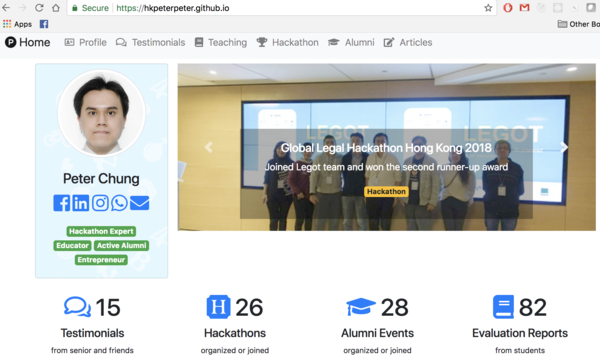

I don’t need to make a living via coding daily. Developing web applications is a hobbyist effort, and it already lasts for 10 years. Programming is a habit. Even a programming language or framework becomes obsolete, the skills will be transferable to other projects. Nothing will be wasted.

It was the first personal website I made when I was studying MPhil at HKUST. I didn’t code anything. I simply applied a web hosting plan, and used Joomla! to create the site.
Joomla! is an easy to use Content Management System (CMS) written in PHP. At that time, it
provided me a nice web layout (in 2007 standard), and it was effortless to create and manage content, with so many plugins available. In particular, the homepage was made by an Adobe Flash Photo Album viewer.
It was not fun. So, and I decided to write something by myself.

In 2008, I decided to build my own static website generator using C++. It was mainly used for my daily work to prepare lab web pages. Most professors in Computer Science, for some reason, don’t like any kind of e-learning platform. TAs are usually being asked to maintain the course website.
Professors usually have a very low standard on the look-and-feel. Yet, editing the HTML website directly is a bit tedious. I quickly made a simple GUI interface to help me load, edit, and export the HTML code. It only worked on some selected HTML template.

Later, I found out that publishing the web content was quite tedious. I needed to keep a local copy and publish the site via SSH. I tried to code up the generator using PHP. It spent me a few weeks to make a WYSIWYG editor. Yet, the university system team had a quite outdated support in PHP (in 2009, it was PHP4. In 2018, it should still be PHP4, I guess) . Many implemented features could not be deployed, and I soon gave up.
For this project, it was too complicated to set up a database. Thus, I created a “hidden” folder with WRX permissions for all roles (i.e 777). PHP supports C-like file I/O operations. I basically treated it as a scripted-C language to build the prototype. It was a quick and dirty (and also fast) implementation.
Fun to learn PHP, but I don’t like this language.
In 2011 (or 2012? I forget), HKUST switched from an in-house course registration system to Oracle system . It was a BIG switch. Before the switch there was a Adobe Flash based timetable manager well-received by students. After the switch, Oracle didn’t provide this feature. At that time, many students complained about that.
Spending around a week, I quickly made a front-end prototype using JQuery + JQuery UI. At that time, JQuery was a relatively new front-end library. This simple prototype dramatically increased the number of likes (around 400 new likes) in my Facebook fan page (Unfortunately, I already deleted that TA page for many years). It was great fun to build something which was being used by real users.
Now, many articles mentioned that we should avoid using JQuery. The native support is already good enough to replace it. Yet, it was a must-have library in 2011, especially IE7/8 was still very popular at that time.
Thanks for various responsive web frameworks (e.g. Bootstrap, Foundation, etc), most websites are mobile friendly nowadays. Yet, in the CSE Department, most websites are still outdated. The culture is very hard to change. Students also don’t care much.
I first built a responsive website in 2013. It was based on Foundation framework. A single-page layout. Maintaining this site was tedious, as I needed to change the content in a single HTML document directly.
React became very popular at that time. I tried to spend sometime to learn this. At the beginning, the learning curve was high. Even without any database connection, it took me a few days to get familiar with the framework and syntax, and gradually built different components for my own website. create-react-app already packaged lots of useful tools and libraries (e.g. webpack, hot-loading)
For personal website, storing data in a database is usually NOT necessary. In my website, the data is store as text files in JSON format. Data files will be imported as JSON objects via React, and then render as web content.
The whole website was a client webapp deployed in GitHub page.

According to StaticGen, a few top GitHub site generators received more than 20,000+ stars, I chose Hugo because it is lighting fast comparing with other frameworks. It is very programmable. Go Template is easy to learn and use. Bootstrap 4 was also released recently, so I decided to build the whole website layout from scratch using Bootstrap 4. The icon library was also upgraded to Font Awesome 5.
I love coding, even I don’t need to code for food or make a living via coding. Front-end development skills change quite rapidly in the past decade. Yet, the changes are mainly on the frameworks. Fundamental concepts (e.g. mobile-first, responsive layout, CSS, javascript, …) are becoming more and more stable.
Maintaining a personal website has no conflict with maintaining other social network profiles. For example, my LinkedIn profile receives all stars. Yet, as a computer science graduate, I should have the skills and ability to build and maintain my own website. Otherwise, how can I distinguish myself with people in other expertise?